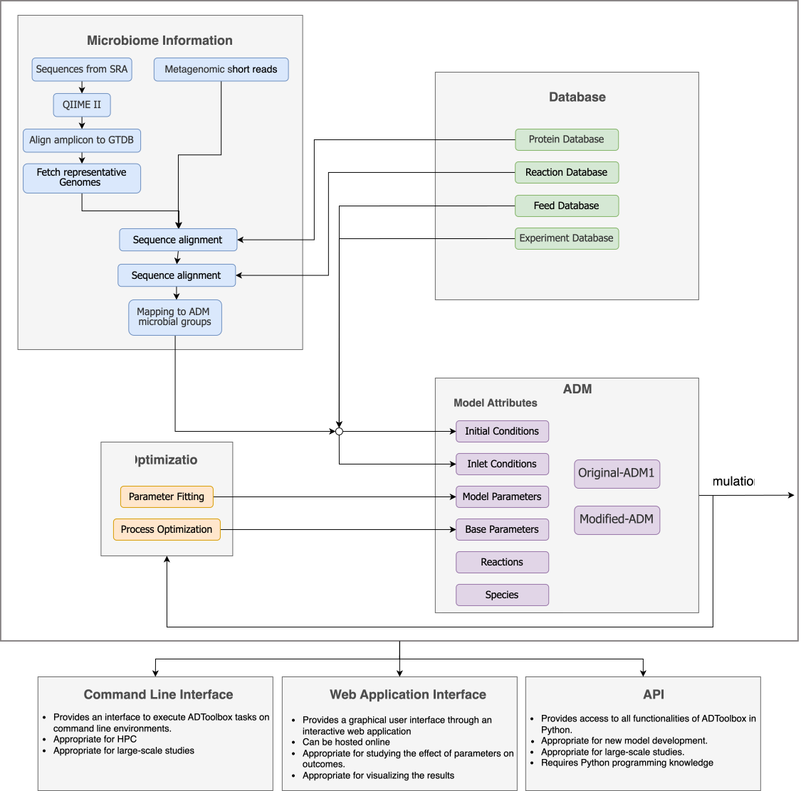

ADToolbox¶
From raw sequencing reads to a calibrated anaerobic digestion model. ADToolbox connects metagenomics evidence, curated reaction and feed databases, and dynamic ADM1 / e-ADM simulations into one reproducible Python and command-line workflow.
What ADToolbox does¶
Anaerobic digestion models such as ADM1 lump the microbial community into a handful of guilds whose initial biomass you are expected to guess. ADToolbox replaces that guess with measurement. It profiles a community two ways — 16S amplicon reads mapped through GTDB and a curated enzyme-to-reaction database, or shotgun reads searched directly against that database for functional evidence — and turns either into the microbial COD allocation that an extended ADM (e-ADM) model actually needs. From there you can simulate, visualize, and fit the model against experimental data.

Explore the docs¶
-
Quickstart
Install the package, download the reference databases, and run your first ADM simulation in a few minutes.
-
Metagenomics pipeline
Turn a table of SRA accessions or FASTQ files into model-ready microbial COD allocations, locally or on Slurm.
-
ADM models
The full input contract, stoichiometry, rate laws, and inhibition terms for ADM1 and e-ADM.
-
Parameter tuning
Fit kinetic parameters to experimental data with SciPy, OpenBox, genetic, or neural-surrogate optimizers.
-
Command line interface
Every
adtoolboxcommand, its options, and the files it reads and writes. -
Python API
Auto-generated reference for
core,adm,configs,optimize,utils, andstats.
Install¶
ADToolbox requires Python 3.11 or newer. See Installation for container images, HPC notes, and the external tools each pipeline step needs.
At a glance¶
| Module | What it gives you |
|---|---|
core |
Databases, feeds, experiments, and the metagenomics pipeline. |
adm |
ADM1 and e-ADM model construction, ODE integration, and plotting. |
configs |
Path and threshold configuration for every other module. |
optimize |
Parameter estimation and model validation against experiments. |
utils |
FASTA helpers, MMseqs2 wrappers, and Slurm job generation. |
stats |
Distance matrices and scaling for feature tables. |
Try it without installing¶


The example notebooks run on Binder, though Escher map visualization is not available there.
Credits¶
ADToolbox is developed in the Chan Lab at Colorado State University.
| Contributor | Contact |
|---|---|
| Parsa Ghadermazi | parsa.ghadermazi@colostate.edu |
| Ethan Rimelman | rimelman@colostate.edu |
| Siu Hung Joshua Chan (PI) | joshua.chan@colostate.edu |